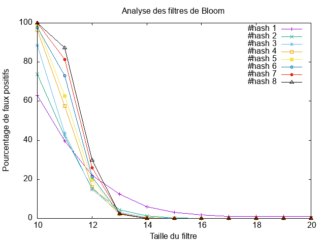

hash_functions
bloomfilter
Date : 29 / 03 / 2021
Ils sont bien implementée
le code de write_txt et un fichier nommé res.txt sont bien implementée
Analyse des filtres de Bloom 
Analyse des filtres de Bloom
hash_functions module